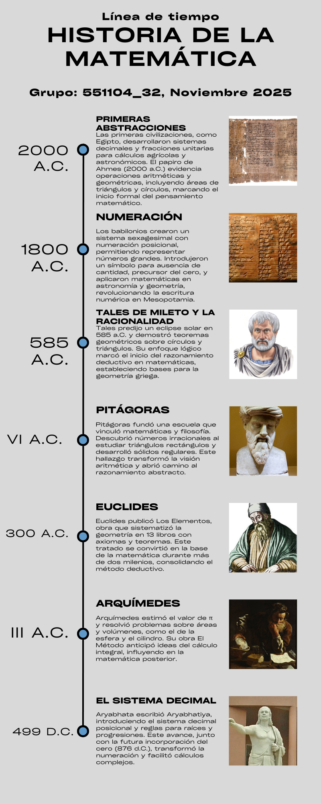
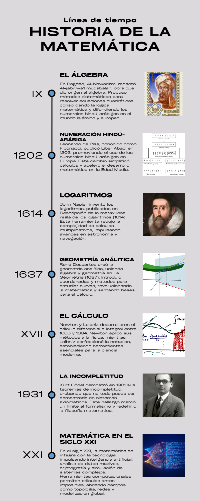

Las matemáticas nacieron como un instrumento para contabilizar, medir y registrar. Con el surgimiento de las comunidades agrícolas y urbanas, la necesidad de medir tierras, de intercambiar productos y de llevar una serie de registros administrativos dio lugar a los más primitivos sistemas de numeración que usaron las culturas de Egipto, Mesopotamia, China y América. Los griegos formalizaron la matemática como ciencia mediante la demostración. En la Edad Media, el mundo islámico preservó y multiplicó el conocimiento. En el Renacimiento y en la Edad Moderna aparecieron el álgebra simbólica, la geometría analítica y el cálculo infinitesimal. A finales de los siglos XIX y XX surgieron las matemáticas modernas: lógica, teoría de conjuntos, estadística, computación y topología. Las matemáticas son fundamentales para la tecnología, la economía, la ciencia, las ingenierías y la inteligencia artificial.
 La interacción entre el hombre de la antigüedad y la naturaleza, junto con su necesidad de supervivencia
y de una búsqueda de bienestar constante, lo llevo a realizar ejercicios mentales en los que se requería
aprender de diversas formas de contrastación entre elementos de una misma especie y la comparación con
otras externas. Tal es el caso de contar las raciones de comida y la comparación con el conteo de los
dedos, asociando y abstrayendo el contar y la forma. Desde aquí, nace el concepto de número como una
forma de experiencia relacionada directamente con la naturaleza y el sentir del ser humano. Este proceso
se fusiono con la lengua hasta dónde el concepto de número se desarrolló aún más hasta el punto en que
las palabras puedan distinguir dualmente entre uno y muchos. Estos conteos y abstracciones eran básicos,
los conteos realizados eran bajos y el simple hecho de la multiplicidad de elementos más allá de cinco o
diez, se entendía como muchos.
Las culturas fueron evolucionando en base a sus necesidades, el desarrollo de la matemática y las
habilidades en sus integrantes respondieron a estas. Más allá de simples procesos de conteos, se amplió
el uso de las matemáticas a procesos como calendarios, mediciones astronómicas y de terrenos para la
agricultura. La antigua civilización egipcia realizo procesos aún más complejos con operaciones en base
a un sistema decimal, en las que se evidenciaban procesos de divisiones por medio de fracciones
unitarias y operaciones entre estas, problemas de tipo algebraicos con características y desarrollos
aritméticos, problemas geométricos que planteaban desde ya el área de un círculo, áreas de triángulos y
enunciados trigonométricos que ya se desarrollaban en torno al 2000 a.C. Pruebas de estos avances se
encuentran en el papiro de Ahmes, donde también se desarrolla la escritura hierática que introducía
cifras y signos para representar dígitos e incluso potencias de diez, lo que reemplazaba la acumulación
de símbolos para representar cifras. Se puede destacar en este periodo un desarrollo principalmente en
torno a la aritmética y la operación de suma como base en la cual apoyar la matemática.
De forma paralela a los egipcios, los babilonios representaban de forma similar la escritura de los
números agrupando los símbolos en uno mayor que podía representar los números enteros. Pero, los
babilonios diseñaron una manera diferente de representar el 60 por características, como la facilidad de
escritura o innovación, esto marco una diferencia radical, pues aquí surge la numeración posicional como
herramienta que permitía escribir cualquier número entero por más grande que fuese de la forma en que lo
hacemos hoy en día. La posición relativa de cada número se encargaba de indicar la cantidad de veces que
fuese mayor que la posición anterior. Para este caso, la posición a la izquierda del número de la
derecha, para los babilonios, era 60 veces más. La ausencia de cantidad en una posición relativa fue
solucionada con una cuña inclinada, símbolos usados por los babilónicos en la escritura numérica, para
representar una idea ambigua de cero, aun así, hasta allí se limita este concepto, pues no se encuentran
registros de este símbolo usado a la aproximación de lo que entendemos como cero actualmente.
En torno al siglo VI a.C., los babilonios ya habían desarrollado y aplicado las matemáticas a diversos
problemas, tanto geométricos como astronómicos. Algo de lo que se sospecha es que Tales de Mileto en la
región Jónica, aprendió a realizar y demostrar teoremas geométricos en base a círculos, división de
ángulos e igualdad de triángulos, e incluso a predecir un eclipse solar en el 585 a.C. Para este
entonces, Tales realizo un punto de inflexión en la matemática por sus demostraciones y por su base en
la racionalidad. Esta estructuración lógica que empieza a nacer desde la civilización griega e impulsar
a los matemáticos posteriores.
La Matemática, empezaba ser desarrollada bajo la lógica direccionada por el razonamiento, se relacionaba
con explicaciones del entorno e incluso de manera religiosa como fue el caso de los pitagóricos que
acompañaban a esta disciplina con la filosofía, dándole dotes de principios morales. De hecho, se cree
que estas palabras fueron acuñadas por Pitágoras (fundador de los pitagóricos) al cual se le atribuye
ser discípulo de Tales y descubridor de la teoría de proporciones y la construcción de solidos regulares
(solidos platónicos), según Proclo. Desde este punto, se considera la evolución matemática más allá de
la respuesta a los requerimientos sociales, es más la curiosidad por la sabiduría y el entendimiento. Es
en esta época donde se sitúa los primeros indicios del razonamiento deductivo, aunque no hay un consenso
histórico del nacimiento de este proceso en Tales de Mileto o con los pitagóricos al momento del
descubrimiento por parte de ellos de los inconmensurables, que estuvo relacionada con el estudio
pitagórico del triángulo rectángulo, números que no pueden ser expresados de manera exacta como
proporciones. Se mantiene la sospecha de que este razonamiento pudo ser alimentado por el nacimiento de
la dialéctica desarrollada en la antigua Grecia, donde era fundamental para las polis que requerían la
argumentación y el razonamiento para defender ideas.
En el siglo V a.C. la matemática se desarrollaba en torno a los lineamientos pitagóricos, aun así,
respondiendo a problemas planteados y principalmente geométricos, como es el caso de los tres problemas
clásicos que circulaban en la antigua Grecia. Dentro de estos se halla la cuadratura del círculo, la
duplicación del cubo y la trisección del ángulo. Platón tuvo una gran influencia en la educación y bases
matemáticas, discutió fundamentos y definiciones como la del punto como un elemento que carece de
dimensión, diferenciación de números pares a impares, los sólidos platónicos (cuerpos hechos con caras
de polígonos regulares) y el método analítico. En este último, Platón formaliza e indica facilidad en la
demostración iniciando por la conclusión que se quiere demostrar. Esto le dio el valor de que su
académica fuera en ese entonces el centro matemático en Atenas. De allí surgió el matemático y astrónomo
Eudoxo, quien ideó el método de exhaución para encontrar áreas de figuras que circunscriban polígonos
con un número mayor de lados dentro de la figura, idea que se aproximaría y se usa hoy en día en cálculo
integral.
Para los siglos IV y III a.C. Ptolomeo, gobernante de la ocupación romana en Egipto, crea en Alejandría
un instituto llamado el Museo, dentro de los profesores se hallaba Euclides de Alejandría, autor de
diversos tratados en múltiples áreas como astronomía, música, óptica, mecánica, etc, y de la famosa obra
titulada Los Elementos, su obra más famosa y que consta de 13 libros sobre los fundamentos de la
geometría plana, teoría de números - incluyendo inconmensurables - y geometría de cuerpos. Se
acompañaban de definiciones que, en términos de Boyer (1987), son incompletas "Se pueden plantear
objeciones fácilmente a otras de las llamadas “definiciones de Euclides, a cuenta de su circularidad
lógica". Dentro de estos enunciados se presentan 10 hipótesis, cinco de estos considerados axiomas
geométricos con los cuales se fundamentaba las demostraciones y teoremas. Es la más importante obra
matemática griega que ha logrado llegar a la actualidad. Ha sufrido variaciones a lo largo de la
historia, por las reproducciones necesarias, pero aun así el espíritu matemático de Euclides se conserva
y marcó en definitiva la historia de las matemáticas en los años venideros.
Posterior a Euclides, otros tratados matemáticos geométricos surgieron, como es en el caso de
Arquímedes, donde trabajo equilibrio de los planos, la medida del círculo y sobre la esfera y el
cilindro. Respecto a la medida del círculo obtuvo una impresionante estimación del número Pi que
superaba a los egipcios y babilonios - aunque no se acercaron a la noción actual de Pi como razón -.
Existe otro tratado de Arquímedes que influye en gran medida sobre la demostración matemática que él
mismo título como el Método, con el que logro realizar grandes avances en la trisección del ángulo (uno
de los problemas clásicos), el área de un segmento parabólico, el volumen de un segmento paraboloide, el
segmento esférico, la relación entre los volúmenes de la esfera y el cilindro, y el volumen de la
esfera. Así, Euclides, Arquímedes y Apolonio resaltan dentro de la Edad de Oro (siglo III a.C.) de la
matemática griega, aunque de este último matemático -Apolonio- fueron perdidas varias de sus obras.
Llega a nuestros días parte de su obra las Cónicas destacándose como una de las mejores obras junto a
los Elementos. En esta obra se abordan la elipse, las parábolas y la hipérbola generadas a partir de un
plano inclinado que corta un cono que no necesariamente debe ser recto, se obtienen también en un cono
oblicuo o escaleno, logrando unificar las tres curvas bajo un concepto general. Esta época dorada se vio
apagada entre el siglo III a.C. y hasta el siglo III d.C., donde posteriormente surgen los últimos
matemáticos algebraicos relevantes de la antigua Grecia como Diofanto de Alejandría y Pappus de
Alejandría, los cuales trabajaron - en grandes rasgos - resolución de ecuaciones determinadas e
indeterminadas y soluciones geométricas a los tres problemas clásicos.
Luego de la caída del imperio Romano de Occidente en el siglo V, nos trasladamos en el siglo VI a la
India. Allí se escribió una de las obras matemáticas más importantes y reconocidas de esta región,
recopilación de obras anteriores, llamada Aryabhatiya por Aryabjata. Consta de 123 estrofas carentes de
una lógica y metodología generalizada, en la que se busca aportar a las reglas de cálculo en astronomía
y medición matemática. Fue un gran compendio de errores y grandes aportes, calificado por algunos
matemáticos como Al-Biruni. En esta obra hindú se encontraba información sobre las potencias de diez,
cálculo de raíces cuadradas y cúbicas de enteros, cálculo de áreas - algunos erróneos -, medidas de la
circunferencia y relación con el número Pi, progresiones aritméticas, proporciones y trigonometría
esférica. La obra también aporta el sistema de numeración posicional decimal, reflejo de su uso en la
cultura, concedido como lo conocemos hoy en día donde el valor relativo representa diez veces más al que
le sigue. Esto marco un punto de inflexión en el sistema de numeración usado en la India, apartando al
sistema de numeración usado allí hasta la fecha - Sistema Brahmi que daba un símbolo único para los
enteros de 1 al 10 y para las potencias de este último -, lo que hizo que fuese posible una reducción de
cifras para ocupar solamente del 1 al 9, para la representación del 10 se usaba el valor posicional. A
pesar de este gran avance, faltaba un elemento crucial para trascender el sistema numeración y era la
introducción de la simbología para representar la ausencia de valor en una de las posiciones relativas
de un número. La aparición de esta idea, el cero como número que acompañaría las nueve cifras, dentro de
la matemática india tarda más de dos siglos, en el año 876.
A pesar de querer atribuir la idea de cero a la India, existen indicios de un posible surgimiento en
Alejandría y su posterior adaptación por el sistema decimal que se construyó en la India (Boyer, 1987,
p. 277). Además, de que parece un surgimiento independiente en culturas occidentales, en el caso de los
mayas en Yucatán - usando un sistema numérico de base vigesimal y de 5 como auxiliar -, y culturas
asiáticas. Los mayas usaban un símbolo diverso similar a un ojo semiabierto que representaba las
posiciones vacías, lo hindúes usaban la forma redonda de un huevo. Dentro del mayor logro hindú se
resalta en haber reunido en su sistema de numeración la base decimal, la notación posicional y la forma
simbólica cifrada para los diez numerales dentro del cual está el cero.
Durante la baja Edad Media (siglo IX), tras la fundación en Bagdad de la Casa de la Sabiduría, una
especia de Museo de Alejandría, el matemático y astrónomo Al-Khowarizmi desarrolla su obra más
importante titulada “Al-jabr wa'l muqábalah”, de la cual se deriva la palabra “álgebra”. Dentro de la
obra se encuentra un nivel más elemental que el desarrollado por Diofanto y principalmente es retorico
escribiendo los números en palabras en vez de símbolos numéricos, aun así, su obra se acerca más al
concepto moderno de álgebra que otras obras anteriores al tratar desde el fundamento la resolución de
ecuaciones cuadráticas de forma exhaustiva siguiendo argumentación lógica con premisas y conclusiones.
Por esto se le atribuye a él el título de “Padre del Álgebra”. Posiblemente, tanto la inspiración y
apoyo de bases académicas sea influenciado por las tres culturas matemáticas más influyentes que fueron
hasta a la fecha, la griega, la Mesopotámica y la India, tomando elementos de estas para realizar las
construcciones de su escrito. La cultura árabe en aquel entonces era variada, pues varios extranjeros
vivianes en los confines de su territorio, donde habían asimilado la religión y el lenguaje como el
común denominador. A pesar de esto, la diversidad cultural trajo conflictos en la escritura matemática,
estaba quienes adoptaban la escritura alfabética griega y otros la hindú, adoptada dentro de la cultura
árabe para la escritura numérica y la cual predominaría con el paso del tiempo sufriendo ligerezas, esto
haría que un correcto nombre para nuestro sistema actual de escritura numérica sea hindú-árabe. (Boyer,
1987, p. 307) La divulgación de esta escritura se esparció tanto en escuela, comerciantes y autores
-Sacrobosco y Villedieu- del siglo XIII, dentro del cual se encuentra Leonardo de Pisa, comúnmente
conocido como Fibonacci. Fibonacci autor de la obra <
La asignación de medidas geométricas con las cuáles apoyarse en la construcción y resolución de problemas
geométricos, desde la generalización, le permitió a Regiomontano hacer uso de procesos algebraicos
elaborados, como el uso de la ecuación cuadrática -aunque lo hizo de forma retorica como lo hizo
Al-Khowarizmi, lo que le limitaba su influencia en el álgebra-. De su obra, L Arithmetica, que ocupo un
estudio de teoría de números, se publicó hasta 1575 en latín. Esta fue una gran aproximación, lenta de
cómo sería la aplicación del álgebra a la geometría.
Cerca de la mitad del siglo XVI, el matemático John Napier, que escribía en principio principalmente de
cálculos numéricos y trigonométricos, desarrollo tablas de multiplicas por medio de varillas y con el
uso de reglas mnemotécnicas para recordar fórmulas de trigonometría esférica. Uno de sus aportes más
relevantes fue la invención de los logaritmos desde el año 1594, utilizando razonamiento en las
sucesiones y geometría, se debe tener en cuenta que el no uso la idea de base de un sistema de
logaritmos, lo que hacía que para la época en su desarrollo fuese diferente a como concebimos la idea
hoy en día. Publico su trabajo en 1614 bajo el título “Descripción de la maravillosa regla de los
logaritmos”. Esta idea fue desarrollada con el objetivo de la facilidad de los cálculos de productos y
cocientes de potencias.
Para el siglo XVII, la organización y comunicación entre matemáticos empezaba a hacerse cada vez más
evidente a través de grupos académicos en Italia, Francia e Inglaterra. Para esta época tuvo gran
influencia la disruptiva ciencia cartesiana desarrollada por René Descartes -padre de la filosofía
moderna- al presentar un nuevo paradigma filosófico y científico que fue publicado en el “Discurso del
método para dirigir bien la razón y buscar la verdad en las ciencias” en 1637, donde la idea era
caracterizada por fundamentar en la materia y el movimiento por medio de fuerzas, la explicación a los
fenómenos naturales y el universo, pensamiento que lo llevaron incluso a crear una nueva área dentro de
las matemáticas, la geometría analítica en torno a 1628 a través de la obra “La géométrie”, con la que
había experimentado el gran potencial de los temas en su obra al resolver un problema planteado por
Pappus de Alejandría con suma facilidad. Su obra tuvo gran valor al lograr hacerle frente al estudio de
curvas, las secciones cónicas, ecuaciones cuadráticas y normales y tangentes.
Uno de los más grandes desarrollos matemáticos posteriores a la geometría analítica, es el estudio del
cálculo infinitesimal desarrollado en el siglo XVIII, pero antes del desarrollo matemático realizado en
esta área por Newton, cabe resaltar a John Wallis, estudioso del análisis infinitesimal en el siglo
XVII, considerado uno de los más importantes matemáticos antes de Newton. Desarrollo fórmulas que, para
el cálculo de áreas bajo una curva, estudio sobre los factoriales y la función gamma que después sería
desarrollada por Euler. Ya en el siglo XVIII, Newton desarrolla el método de fluxiones para el estudio
de cálculos infinitesimales en las que consideraba cantidades como flujos - de allí el nombre
“fluxiones”, publicado en 1742, en respuesta a la necesidad de cálculos de movimientos astronómicos.
Tanto Newton como Leibniz, por separado logran desarrollar el cálculo infinitesimal de forma racional,
lógica y con geometría analítica. El enfoque de Newton fue principalmente en aplicaciones físicas y el
de Leibniz en problemas geométricos como la determinación de mínimo y máximos de una función. Leibniz,
hace un gran aporte den la notación de los procesos de cálculo para una mayor facilidad de resolución.
Este cálculo desarrollado se enfocaba en la resolución de la tangencia a una curva, para lo que el
cálculo diferencial se requería, y hallar el área bajo una curva que se desarrollaba con e cálculo
integral. Posterior a estos dos matemáticos, Euler fundamenta y formaliza el análisis como área de las
matemáticas, dotándola de definiciones, relaciones, notaciones y estudios compilados en tratados. Además
de estos trabajos, Euler desarrollo 800 trabajados, 500 libros, contribuyo a otras ramas matemáticas,
resolvió problemas abiertos a la época, estudio series convergentes y divergentes, desarrollo las
identidades que relacionan el número transcendental que lleva su nombre con la unidad imaginaria y el
número Pi.
Paralelamente en esta época, en 1713, Jacques Bernoulli publica “Arte de la conjetura” que abarca la
teoría de probabilidades con un estudio general de permutaciones y combinaciones junto con aplicaciones
del método de inducción matemática. Dentro de esta obra se halla el famoso teorema de Bernoulli “Ley de
los grandes números”. Además, se desarrollaba en más profundada la teoría de números, los inicios de la
idea de límite y la geometría analítica tridimensional. Durante esta época moderna de las matemáticas la
dirección de las matemáticas en sus diversas áreas fue guiada por diversas mentes de toda Europa,
descentrándose el progreso en un foco geográfico como en la antigüedad.
A finales del siglo XVIII, la revolución francesa sacude la política, la sociedad y las matemáticas.
Durante en fervor de la revolución se crea el sistema métrico decimal, una generalización para la
medición. En esta época nace también la geometría descriptiva que convertía el dibujo técnico en
ciencia. Lagrange lleva la mecánica a un plano algebraico, mientras Laplace construía la mecánica
celeste y funda la teoría moderna de la probabilidad. Legendre fija la geometría elementa y explora
integrales elípticas, y Carnot reflexionaba sobre los fundamentos del cálculo. Era la época en la que la
matemática se institucionalizaba, se volvía herramienta del Estado y adquiría un rigor que marcaría el
siglo XIX.
Bajo este escenario surge una nueva generación de matemáticos que redefine la materia. Gauss, apodado el
"Príncipe de los Matemáticos", publica unos trabajos donde establece la aritmética de las congruencias y
la ley de reciprocidad cuadrática, y demuestra el teorema fundamental del álgebra, introduce la
representación gráfica de los números complejos y aplica el método de mínimos cuadrados para resolver
problemas astronómicos, uniendo teoría y práctica. Por otra parte, Cauchy, convierte el análisis en una
ciencia rigurosa definiendo límites y continuidad, organiza la teoría de series y funda la teoría de
funciones de variable compleja. Con ellos, la matemática deja de ser solo herramienta y se convierte en
sistema lógico, preparando el terreno para la revolución geométrica. Lobachevski y Bolyai, rompen el
dogma euclidiano y crean la geometría hiperbólica, Rienmann da un paso más al concebir la geometría como
estudio de espacios curvos. La geometría deja de ser la ciencia del espacio físico y se convierte en una
teoría abstracta. En este punto el análisis se aritmetiza al dejar de apoyarse en instituciones
geometría y se funda en lógica y número.
Paralelamente, el álgebra pasa a resolver ecuaciones y se convierte en el lenguaje de las estructuras.
Booble y De Morgan transforman la lógica en álgebra, anticipando la era digital. El álgebra se emancipa
y se vuelve abstracta, preparando la axiomatización del siglo XX. Hilbert propone axiomatizar toda la
matemática, esto entra en conflicto con las ideas demostrados por Gödel donde que no todo puede ser
demostrado, dando la incompletitud que marca los límites del formalismo.
De esta forma la matemática deja de ser un conjunto de técnicas dispersas para convertirse en una
estructura coherente y universal. Desde institucionalización revolucionaria hasta la axiomatización del
siglo XX, la disciplina se ha transformado en el lenguaje y método para toda la ciencia. El análisis se
aritmetizó, la geometría se liberó del espacio físico, el álgebra se volvió abstracta y la lógica
penetró en sus fundamentos. Así la contemporaneidad no cierra con respuestas definitivas, sino con una
conciencia crítica.
En el siglo XXI, la matemática ha logrado integrar otras materias, tecnológicas y globalizarse. Su papel
es central en la inteligencia artificial, análisis de datos masivos (Accadem Universidad, 2023),
criptográfica y modelización de sistemas complejos, apoyándose en potentes herramientas computacionales.
Las investigaciones exploran fronteras como la topología general (Camargo & Villamizar, 2025), la teoría
de redes y la matemática computacional. Hoy la matemática mantiene su esencia como lenguaje universal,
pero se proyecta como motor de innovación científica y tecnológica en un mundo cada vez más
conectado.